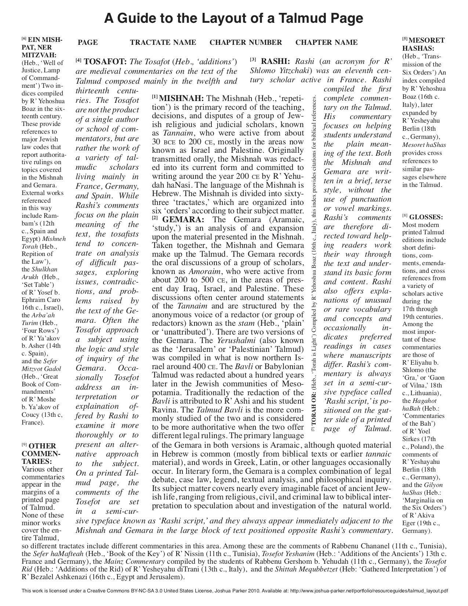

I wrote Scripture based on the format of the Talmud. I used the format of the Jewish Talmud to interrogate the often-forgotten subjectivity of writing algorithms, positioning algorithms as a modern "scripture" of the people
Scripture was published in the critical theory of technology class zine collectively made by the Fall 2018 School for Poetic Computation class.
The poem reflects the Talmudic framework as each piece of critique in the side panels of the text is formatted to reflect how old Rabbi's discussed the central passages:
